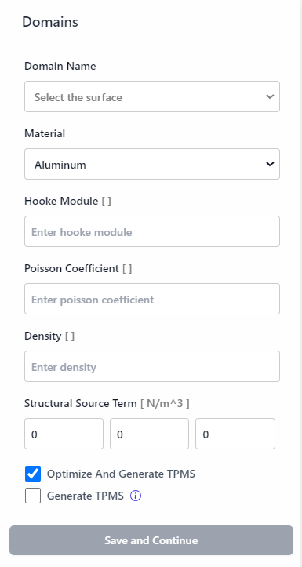
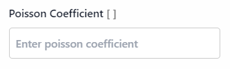
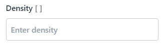

Domains
The Domains section allows users to define and configure the different material and domain properties for their project. This is a crucial step in setting up the model for optimization and analysis.
Interface Overview
Domain Name

- Select the surface: A dropdown menu to select the surface you want to define as a domain. Each domain corresponds to a specific part of the model.
Material

- Material: A dropdown menu to select the material for the selected domain. Example options include Aluminum, Steel, Titanium, etc.
Hooke Module

- Hooke Module [ ]: The Young's modulus of the material in Pascals (Pa). This is a measure of the stiffness of the material.
Poisson Coefficient
- Poisson Coefficient [ ]: The Poisson's ratio of the material. This is a measure of the deformation of the material in directions perpendicular to the direction of loading.
Density
- Density [ ]: The density of the material in kilograms per cubic meter (kg/m³).
Structural Source Term

- Structural Source Term [N/m^3]: Input fields for the structural source term in Newtons per cubic meter (N/m³) in the X, Y, and Z directions. This is used to define any additional forces acting on the domain.
Options

- Optimize And Generate TPMS: A checkbox to enable optimization and generation of Triply Periodic Minimal Surface (TPMS) structures. TPMS structures are used for lightweight and high-strength design.
- Generate TPMS: A checkbox to generate TPMS without optimization.
Save and Continue
- Save and Continue: Click this button to save the current boundary condition and continue to the next step.